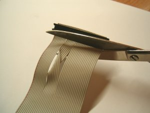

Instalación y uso de una unidad de disco de 3" en un PC
Si hay una gran contienda pendiente en cuanto a la preservación de software de Spectrum se refiere, podríamos resumirla bajo cuatro siglas: EDSK. El formato definido por Doewich, Thacker y Vieth cubre, aparentemente, todas las expectativas de los entusiastas del +3, al soportar toda protección de disco conocida para las tres pulgadas. Sin embargo, no son muchos los que tienen una disquetera de 3" instalada en su PC, requisito imprescindible para crear imágenes perfectas de discos de 3" en formato EDSK, así como para volcar éstas de nuevo a disco. Con este artículo trataremos de animar al lector a dar el paso que le permitirá preservar perpetuamente intactos sus discos de 3".
Antes de ponernos manos a la obra, conviene advertir que ni el autor de este artículo, ni SPECCY.ORG, ni la redacción de Magazine ZX, se hacen responsables de los posibles daños que pudiese ocasionar en su PC u otros componentes al seguir esta guía. Particularmente el lector debe recordar que bajo ningún concepto puede conectar la disquetera de 3" a su PC simultáneamente a otras unidades de disco flexible (e.g., la de 3 1/2"), so riesgo de provocar daños irreversibles en la controladora o unidades de disco.
Propósito
Con la instalación de una disquetera de 3" en nuestro PC perseguimos, principalmente, dos cometidos:
- Poder preservar discos de 3", y especialmente los protegidos, en un archivo .DSK (imagen de disco en formato EDSK).
- Poder grabar discos de 3" a partir de imágenes como las anteriores, de tal modo que seamos capaces de utilizarlos directamente en nuestro +3.
Con respecto al segundo punto, existe la errónea creencia de que conectando una disquetera de 3 1/2" al +3 (véase artículo relacionado de MagazineZX referenciado más abajo, en el apartado de enlaces), y copiando de 3 1/2" a 3" por medio de un copión, podemos igualmente lograr tal propósito, pero lo cierto es que con ciertas protecciones de disco esto no funciona. Por el momento, la única manera de conseguir volcados perfectos de un DSK es conectando una unidad de disco de 3" a nuestro PC. En ello vamos a centrar nuestro esfuerzo de aquí en adelante.
Material requerido
- Un PC. Si simplemente pensamos utilizar CPDRead/CPDWrite, nos basta con un PC viejo, al que le instalaremos MS-DOS. Un 486 o un Pentium lento es ideal. En caso de que queramos utilizar CPCDiskXP, necesitaremos un PC que pueda soportar un Windows 2000 o XP. Si estamos dispuestos a prescindir de la disquetera de 3 1/2", podemos adaptar el PC de sobremesa que utilicemos habitualmente. Hay que tener presente que la unidad de 3" y la de 3 1/2" nunca podrán estar simultáneamente conectadas.
- Una faja de disquetera de PC convencional, con al menos un conector hembra para disquetera de 3 1/2" (34 PIN IDC). La misma faja que lleve el PC bastará, con toda seguridad.
- Tijeras y/o cutter. Será necesario realizar algunos cortes en el cable plano.
- Un conector IDC de 26 pines. En caso de apuro, podemos sacarla de una faja de diskettera de un +3.
- Una disquetera de 3". Igualmente, podemos extraerla de un +3 o CPC6128.
Afortunadamente, no es necesario que destripemos un +3 si no queremos, sino que podemos acudir a alguno de los múltiples vendedores que existen en la red, como el afamado John R. P. King, especialista en las 3 pulgadas: http://www.pcwking1.netfirms.com/plus3.html (no, no es colega, ni cobramos comisión por la publicidad ;-))
Otra opción es, por supuesto, comprar una unidad externa de disco Amstrad FD-1 y conectarla al PC. De ese modo te evitarás realizar el montaje del que versa este artículo, ya que no necesita ningún tipo de adaptador (el conector es IDC de 34 pines).
|
|
| foto: José Leandro Novellón |
Realización del cable
Esquema del cable
La disquetera del PC tiene más señales que la disquetera de 3". Será necesario adaptar el cable para poder conectar la disquetera de 3". Por suerte, las modificaciones son pequeñas y la mayoría de señales y pines coinciden en ambos casos.
El cable que fabricaremos aquí permitirá conectar una disquetera de 3" como unidad "A:" en un PC.
El esquema del cable es el siguiente:
| Pin 3.5" | Pin 3" | Description |
|---|
| 2 | NC | Density Select |
| 4 | NC | Reserved |
| 6 | NC | Reserved |
| 8 | 2 | Index |
| 10 | 8 | Motor Enable A |
| 12 | 6 | Drive Sel B |
| 14 | 4 | Drive Sel A |
| 16 | NC | Motor Enable B |
| 18 | 10 | Direction |
| 20 | 12 | Step |
| 22 | 14 | Write Data |
| 24 | 16 | Floppy Write Enable |
| 26 | 18 | Track 0 |
| 28 | 20 | Write Protect |
| 30 | 22 | Read Data |
| 32 | 24 | Head Select |
| 34 | 26 | Disk Change |
| Nota: todos los pines impares son GND |
Construcción
Con ayuda de las tijeras, cortamos el conector IDC 34 que está después del cruce de cables.
Si nos fijamos en el cable, veremos que hay un cable pintado de rojo. Esto nos indica cual es el hilo número 1.
| 
|
| foto: José Leandro Novellón |
Pasamos a eliminar los cables que no necesitamos. En este caso, los cables que van del 1-6 y la pareja 15-16.
Para juntar los cables, antes de presentarlo sobre el conector IDC de 26 pines, podemos usar un poco de celo o cinta aislante. Al cortar algunos cables, el resto se resisten a quedar perfectamente alineados.
|
|
| foto: José Leandro Novellón |
Presentamos el cable sobre el conector IDC 26 el cual solo puede ser puesto en una posición. En el conector hay una flecha en un extremo que indica cual es el cable número 1. Si no encontramos la flecha nos podemos valer de la muesca grande en el centro del conector. En la foto se puede ver que el cable número 1 es el primer cable empezando por arriba y que no se ve la muesca (está en la otra cara)
|
|
| foto: José Leandro Novellón |
Comprobaremos que los cables quedan encima de los dientes del conector IDC 26. La pieza que cierra ayuda pues tiene una ligeras marcas.
Con la ayuda de un martillo, iremos golpeando la pieza que sujetará el cable contra el conector. Poco a poco veremos como va bajando y el conector quedará cerrado del todo.
|
|
| foto: José Leandro Novellón |
El cable ya está finalizado. Si se dispone de un polímetro, es aconsejable comprobar que hay continuidad entre ambos el conector de PC y el de la disquetera de 3".
|
|
| foto: José Leandro Novellón |
Conexión de la diskettera al PC
En primer lugar, insistimos en que la unidad de 3 1/2" debe estar desconectada del PC. Es importante recordarlo: ambas unidades nunca pueden coexistir.
Listo el cable de datos, es necesario adaptar el conector de alimentación del PC que irá a la toma de la disquetera de 3". En la siguiente imagen, se muestra el conector de alimentación de una disquetera de 3 1/2" (izquierda) y el de una de 3" (derecha). Como puede verse, la toma de alimentación de 3" lleva intercambiadas las señales de +5v (cable rojo) y +12v (cable amarillo). Por tanto, deberemos intercambiar dichos cables (rojo y amarillo) en el conector de nuestro PC. Las señales de tierra (cables negros) pueden quedar igual:
|
|
| foto: Jaime González Soriano |
En la propia imagen puede observarse como el conector cuenta con cuatro pequeñas ranuras, a través de las cuales se ve la terminación metálica de cada uno de los cables. Para poder extraer uno de ellos, basta con introducir un destornillador plano por la ranura correspondiente, de manera que desplace levemente la terminación metálica del cable hacia abajo, y luego tirar del cable hacia fuera. No es necesario apretar fuerte con el destornillador; se trata simplemente de aplicar la presión de forma correcta.
|
|
| Cómo intercambiar los cables rojo y amarillo con ayuda de un destornillador |
Finalmente, conectaremos la disquetera a la controladora de disco del PC (FDC) empleando el cable de datos que hemos desarrollado, y enchufaremos el recién adaptado conector de alimentación a la correspondiente toma de la disquetera. A continuación, arrancamos el PC, entramos en la configuración de la BIOS y, si ésta nos lo permite, definimos la unidad de disco como 5 1/4" 360 Kb. También podemos quitar la unidad A: de la secuencia de búsqueda de dispositivos de arranque (bootup sequence) ya que carece de sentido arrancar el PC con un disco de 3".
Nótese que si la luz de la disquetera permanece continuamente encendida será muy probablemente porque hemos conectado el cable de datos al revés.
Configuración y puesta a punto del PC
Para manipular discos de 3" existen tres herramientas: CPD TOOLS (MS-DOS), CPCDiskXP (Windows) y SamDisk (Windows, aún en versión beta), cada una de ellas con sus pros y contras, que serán analizados más adelante. En caso de querer utilizar únicamente una de estas herramientas, bastará con tener instalado el sistema operativo correspondiente (MS-DOS o Windows). Pero si queremos poder utilizar las tres, algo que a día de hoy (diciembre de 2007) es más que recomendable, será imprescindible configurar un arranque dual (dual-boot). Esto implica el consiguiente particionado de nuestro disco duro (a menos de que estemos dispuestos a sacrificar un disco duro, destinándolo íntegramente a MS-DOS).
Si ya contamos con un sistema Windows, ¿realmente es necesario hacer una partición con MS-DOS? Bien. La cuestión es que, hasta donde conocemos, no es posible ejecutar satisfactoriamente CPD TOOLS desde el símbolo de sistema en Windows NT. Desgraciadamente, el S.O. interfiere con las operaciones a bajo nivel que las CPD TOOLS realizan con la disquetera. Y, dado que no tenemos disquetera de 3 1/2" en el PC, puesto que no pueden estar ambas conectadas al mismo tiempo, tampoco podemos emplear un disco de arranque con MS-DOS. Así pues, asumiremos que vamos a tener una pequeña partición con MS-DOS para las CPD TOOLS (puede ser FAT16 ó FAT32), y otra con Windows 2000/XP/…, desde la cual ejecutaremos CPCDiskXP o SamDisk (y que será FAT32 o NTFS).
Una de las cosas que primero debemos tener en cuenta es que, para que MS-DOS pueda arrancar, es necesario que se encuentre alojado en el primer disco duro, en una partición primaria. Suponiendo que no queremos tener discos duros dedicados, sino que vamos a particionar el disco principal, esto implica que tendremos al menos dos particiones primarias: la de Windows y la de MS-DOS.
|
|
| La disquetera después de montarla en el PC |
Si vamos a partir de cero, podemos particionar el disco por medio de FDISK, instalar después MS-DOS, y a continuación instalar Windows 2000/XP, y de ese modo tendremos arranque dual. La partición que se encuentre físicamente en primer lugar será la que reciba la letra de unidad C: en Windows, aunque el S.O. se encuentre instalada en la otra (¡ojo con esto!).
En cualquier caso, a menudo la situación es diferente: tenemos Windows 2000/XP instalado, y lo que queremos es habilitar una nueva partición para instalar MS-DOS sin destruir lo que ya tenemos. Una opción es utilizar una herramienta como Partition Magic, si disponemos de la correspondiente licencia. La otra, utilizar software libre, para lo cual es útil seguir la guía de TR-LOG incluida en la sección de enlaces, y que se resume en tres pasos: (1) ejecutar un CD de arranque de Linux que incluya un gestor de particiones como GParted o QTParted, y con él reparticionar el disco, (2) instalar MS-DOS 7.1, también desde CD autoarrancable, y (3) instalar un gestor de arranque (boot loader) como puede ser GAG. Se trata de un proceso bastante mecánico y sencillo.
El interés de instalar el denominado MS-DOS 7.1 (una versión no oficial, por cierto) radica no sólo en el soporte en que es distribuido (CD autorrancable) sino en la posibilidad de dar soporte a FAT32 y nombres largos, lo que será muy útil si pretendemos manipular la partición de MS-DOS desde Windows (y realmente así será, con el fin de transferir los DSKs de una a la otra - recordemos que no tenemos disquetera para poder moverlos; y además, si la de Windows es NTFS, dicha partición será invisible desde MS-DOS). En ese sentido, conviene apuntar que, si la partición de Windows tenía originalmente asignada la letra de unidad C: en el sistema, deberíamos crear la partición de MS-DOS físicamente a continuación (y no antes) de ella, pues de otro modo será invisible desde Windows. No obstante, tampoco debería estar más allá del cilindro 1024, de acuerdo con algunas fuentes.
Manipulación de discos de 3"
Para volcar discos a DSK, así como para pasarlos de DSK a disco, existen tres herramientas en funcionamiento: la más antigua pero todavía "la reina", las CPD TOOLS, funcionan únicamente sobre MS-DOS. Para suplir la carencia de una herramienta sobre Windows nace CPCDiskXP, disponible para Windows 2000 / XP y en adelante. Y en este artículo os presentamos también una herramienta que se encuentra aún en fase beta, pero que vendrá a ampliar el parque de herramientas para Windows 2000 / XP, y posiblemente también para Linux: la nueva versión de la herramienta SamDisk, originalmente concebida para los discos de Sam Coupé.
Antes de pasar a repasarlas con más detalle, es de justicia nombrar una aplicación que hoy en día resulta casi imprescindible para los que trabajamos con DSKs: el SPIN Disk Manager de Damien Guard. Aunque no entraremos aquí a explicar su funcionamiento, incluimos un enlace a la página web del programa, puesto que os resultará un útil compañero a la hora de, por ejemplo, detectar posibles deficiencias en vuestros DSKs.
CPD TOOLS (CPDRead 3.24 / CPDWrite 1.03)
En los números 1 y 2 de esta revista, Miguel realizó un reportaje muy detallado sobre estas dos herramientas, creadas por Kevin Thacker (uno de los autores del formato EDSK). Dada la minuciosidad de dicho artículo, no incidiremos de nuevo sobre ello. No obstante, es conveniente remarcar que CPDRead es, de las públicamente disponibles a día de hoy, la herramienta más potente para preservar discos de 3" en formato EDSK. Por tanto, si nuestro objetivo es preservar discos de 3", será absolutamente necesario crear una partición con MS-DOS para poder sacar pleno potencial a la unidad a través de esta herramienta.
Las CPD TOOLS siguien siendo hoy en día las herramientas "oficiales" para volcado de discos, y son capaces de manejar muchas de las protecciones de disco de +3 y CPC. CPDRead es capaz de procesar discos con tamaños mixtos de sector, errores de datos, marcas de dirección (address marks) borradas y sectores de 8K truncados. Al ser una herramienta antigua, no incluye las últimas revisiones del formato EDSK, con lo que no es capaz de almacenar múltiples copias de los sectores erróneos o débiles (utilizado por el sistema Speedlock) o almacenar más de 6144 bytes de los sectores de 8K (necesario p.e. para Coin-Op Hits, Final Fight u otros). Tampoco es capaz de manejar discos que tienen tamaños de cabecera ID inválidos (empleado p.e. en los discos de utilidades de Kobrahsoft SP5, SP6 y SP7). No obstante, es capaz de procesar la inmensa mayoría de discos publicados para el +3.
|
|
| CPDRead en funcionamiento |
CPCDiskXP v1.6
CPCDiskXP es una herramienta desarrollada por Óscar Sánchez, alias Mochilote, para poder transferir discos a DSK, y viceversa, desde Windows 2000 o superior. Es, sin duda alguna, un excelente complemento para CPD TOOLS; y para algunas cuestiones, un más que digno sustituto. CPCDiskXP requiere instalar un driver elaborado por Simon Owen (autor de SamDisk) para acceder a bajo nivel a la controladora de disco, llamado fdrawcmd.sys, y que viene incluido en el propio paquete de CPCDiskXP (basta con lanzar un ejecutable para que quede instalado en el sistema de forma permanente, siendo desinstalable del mismo modo). A la fecha de redacción de este artículo, la última versión disponible de CPCDiskXP es la 1.6.
El funcionamiento de CPCDiskXP es muy intuitivo, gracias a su atractiva interfaz gráfica. En la pantalla principal contamos con dos grandes iconos para pasar de DSK a disco 3" y de disco 3" a DSK, y con otros botones más pequeños para poder formatear un disco u obtener información del mismo. Durante la lectura de un disco, se nos muestra un mapa de sectores en el que se puede seguir el proceso y observar el estado de cada uno de los sectores. Para la escritura, se nos muestra simplemente una barra de progreso.
CPCDiskXP soporta discos estándar de +3 y CPC y algunas protecciones de disco relativamente básicas. En la versión 1.6 aún no es capaz de manejar discos con tamaños mixtos de sector, IDs falsos, errores de datos, sectores de 8k truncados, o sectores débiles (weak sectors). Desgraciadamente, esto significa que la mayor parte de los discos protegidos no pueden ser volcados de forma correcta. No obstante, su interfaz gráfica lo hace ideal para tareas básicas. Además, nos permite elegir el número de reintentos en caso de error en lectura, algo de lo que CPDRead carecía y que sus usuarios siempre han echado en falta (aunque en caso de error final, el programa deja desafortunadamente todo el sector en blanco en el DSK).
A pesar de ello, CPCDiskXP es una herramienta muy útil en los tiempos que corren, teniendo en cuenta que nos permite hacer uso de la disquetera desde Windows de forma rápida e intuitiva, sin necesidad de abandonar nuestra sesión del Sistema Operativo.
SamDisk 2.1.1
SamDisk es una herramienta para Windows 2000/XP, originalmente pensada para la manipulación de discos de Sam Coupé, y desarrollada por Simon Owen (autor también del emulador Sim Coupé). La última versión publicada es la 2.0, pero hemos tenido acceso a una beta de la versión 2.1.1 que permitirá el manejo de discos de 3". A pesar de contar con una apariencia mucho más austera que las herramientas anteriormente mencionadas (se maneja desde línea de comandos), SamDisk parece llamada a convertirse en la aplicación definitiva para el manejo de discos de 3".
SamDisk nos permite leer, grabar, formatear o examinar discos a nuestro antojo, de forma similar a cómo funciona la versión actual de SamDisk para discos de Sam. De muestra, un botón:
Copiar de disco a imagen EDSK (42 pistas, sólo cara 0):
SamDisk a: myimage.dsk /t:42 /s:0
|
Copiar imagen EDSK a disco (la geometría del disco se obtiene de la imagen):
Examinar disco (nos da información más allá de lo que queda almacenado en EDSK, y por tanto es útil para examinar discos desconocidos):
SamDisk /scan a: /t:42 /s:0 /a
|
El parámetro /a muestra dónde se encontraron los sectores en cada pista, lo que permite determinar el tamaño de los huecos (gaps), así como mostrar qué sectores fueron escritos a propósito sin un campo de datos. Se puede emplear también el parámetro /scan sobre imágenes EDSK, pero en ese caso la información sobre la posición no estará disponible.
Es de esperar que Simon cambie ligeramente la sintaxis de invocación del programa en el momento en que aparezca la versión Linux, debido al uso de la barra oblicua ("/") para pasar los parámetros.
SamDisk 2.1.1 hace uso de las últimas revisiones del formato EDSK para soportar discos que anteriormente no podían ser volcados. Puede leer y escribir tamaños mixtos de sector, errores de datos, campos de datos inexistentes, sectores bobos (dummy sectors), IDs falsos y sectores de 8K truncados. Tiene la capacidad de escribir sectores débiles (necesario para los discos protegidos con Speedlock) así como sectores de más de 6K (como los de Coin-Op Hits) empleando una unidad ralentizada. Puede escribir también discos protegidos con Alkatraz, solucionando un problema con el cargador de arranque que evitaba que funcionasen en unidades de 3.5". Hasta donde se conoce, es capaz de escribir todas y cada una de las imagenes EDSK tanto de +3 como de CPC.
Por supuesto, nos permite elegir el número de reintentos en caso de error de lectura. Como puntos negativos de la herramienta, hay que destacar que los DSK que genera a veces no son compatibles con emuladores y herramientas antiguas, al seguir las últimas revisiones del formato EDSK. De hecho, al almacenar múltiples copias de los sectores erróneos, nos encontramos con que los malos volcados a menudo dan problemas con determinados programas. Como efecto lateral, el fichero DSK puede resultar notablemente más grande de lo habitual en el caso de que aparezcan múltiples sectores erróneos y hayamos marcado varios reintentos. Y, por supuesto, se echa de menos una interfaz gráfica como la de CPCDiskXP.
A pesar de esto último, podemos afirmar con rotundidad que, cuando la versión definitiva de SamDisk vea la luz, tendremos la herramienta casi definitiva para el manejo de discos de 3" en el PC. Mientras tanto, os recomendamos la instalación de un arranque dual, y el uso de CPCDiskXP para las tareas rutinarias, y CPD TOOLS para tareas de preservación y manipulación de discos protegidos más específicas.
AGRADECIMIENTOS / ACKNOWLEDGMENTS
A Jaime González Soriano, por la foto de los conectores de alimentación, y a Simon Owen por la información facilitada y la versión beta de SamDisk.
(To Jaime González Soriano, for the photo of the power supply plug, and to Simon Owen for all the information he kindly provided and the beta version of SamDisk.)
LINKS
- GUIAS ALTERNATIVAS
- ARTÍCULOS RELACIONADOS
- FORMATOS DSK/EDSK: HERRAMIENTAS Y DOCUMENTACIÓN
- DUAL-BOOT DE DOS Y XP
- PROYECTOS DE PRESERVACIÓN DE DISCOS